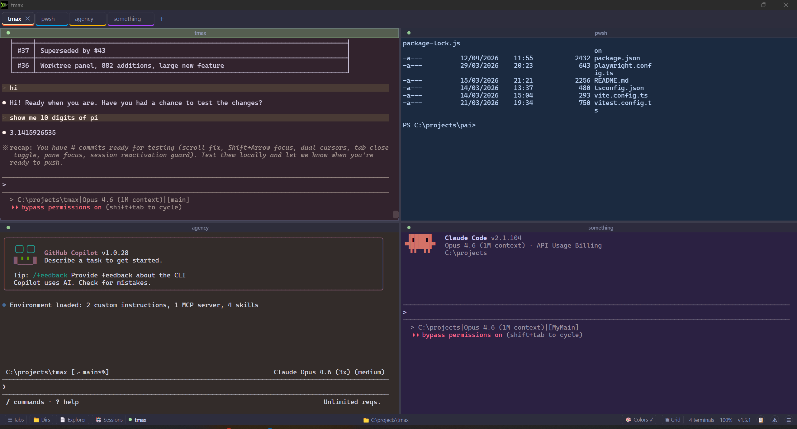
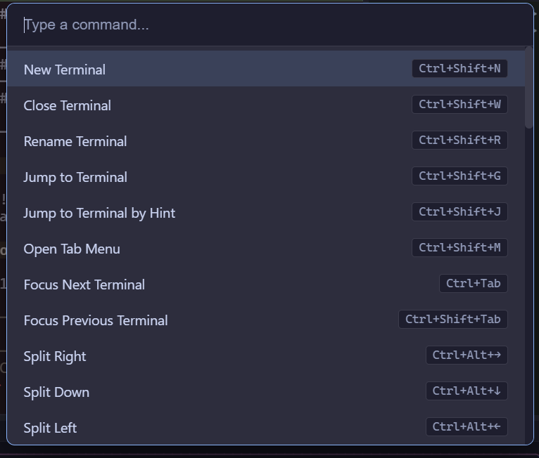
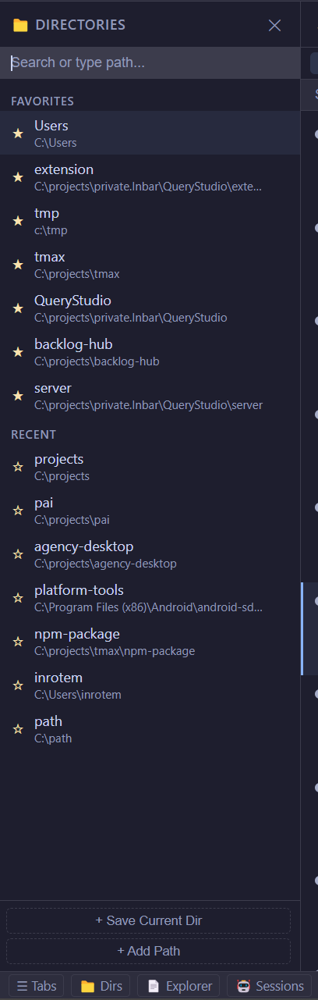
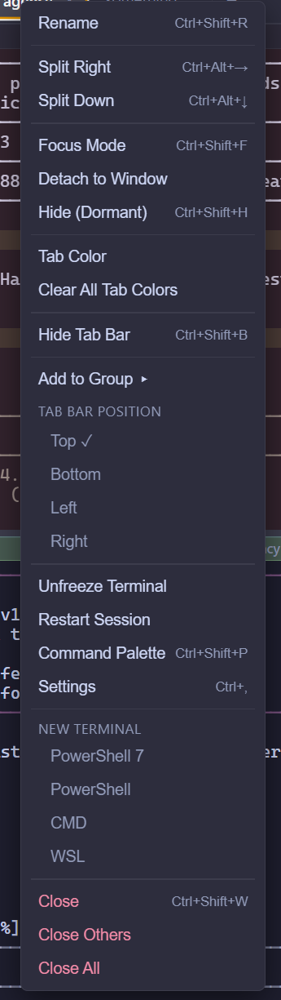

tmax
Terminal on steroids
Tile terminals, run multiple AI agents side by side, and track every Claude Code and Copilot session in one window. Windows, macOS, Linux.
Terminal on steroids
Tile terminals, run multiple AI agents side by side, and track every Claude Code and Copilot session in one window. Windows, macOS, Linux.

If any of these sound like your week, you'll feel at home.
Spin up Claude Code in one pane, Copilot in another, a build log in a third. Track which ones are thinking, waiting for approval, or completed from the side panel.
Ctrl+Shift+P opens a VS Code-style command palette to jump anywhere: switch terminals, split a pane, toggle a panel. Shift+Arrow moves focus between panes. Every shortcut is rebindable in settings.
Rename any tab or AI session so you know at a glance what each one is doing. Flip to grid view to watch several agents progress in parallel, then zoom into one with focus mode (Ctrl+Shift+F) when it's time to pay attention.
Detecting your platform...
Download for your platformxattr -cr /Applications/tmax.app
Other platforms:
Horizontal, vertical, grid, floating — arrange terminals however you want. Drag tabs to rearrange.
See your Claude Code and Copilot sessions, resume them, jump to any prompt you gave. Track what's active, completed, or old.
Browse files next to your terminals. Click to preview, double-click to open in your editor. WSL paths work too.
Color-code and group tabs. Collapse a group to hide them, drag tabs between groups.
Command palette, jump to any pane, split/move/resize — all without touching the mouse. Every shortcut is rebindable.
Finds AI sessions running inside your WSL distros and lets you resume them from tmax.
Review code changes without leaving the terminal. File tree, inline annotations, filter by file.
Pick your font, choose a theme, turn on Mica/Acrylic on Windows 11. Dark mode enforced everywhere.
Auto-updates itself. You'll see what changed before the update applies.





Found a bug or have a suggestion? Let us know.
Use your personal GitHub account, not your org/EMU account.
tmax is open source. PRs are welcome!
Use your personal GitHub account, not your org/EMU account.